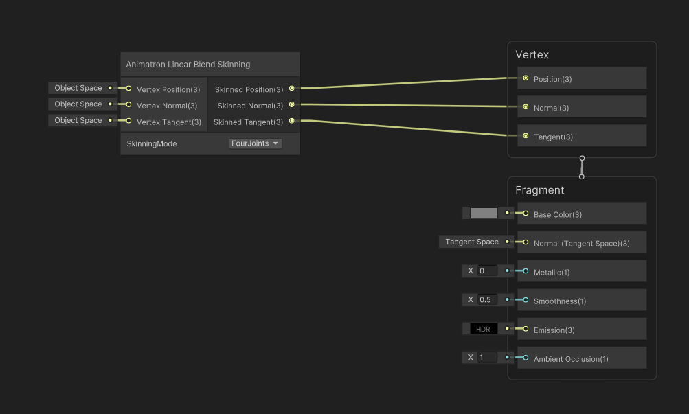

Custom Skinning Shader
This tutorial will guide you through creating a custom shader that supports Animatron deformations using Shader Graph.
Shader Graph
1. Create a New Shader Graph
Animatron relies on the Shader Graph package, so you'll need to create a new shader using Shader Graph.
Right-click in the Project view and select:
Create > Shader Graph > ...
Choose the appropriate option based on your render pipeline (URP, HDRP, etc.) and surface type (Lit, Unlit, etc.).
2. Add the "Animatron Linear Blend Skinning" Node
Open the newly created shader graph. In the graph window, right-click and choose:
Add Node > Animatron Linear Blend Skinning
Connect the Skinned Position, Normal, and Tangent outputs of the node to the corresponding Vertex Block inputs.
Save the graph.
Skinning Mode
The Animatron Linear Blend Skinning node has a SkinningMode option with the following settings:
FourJoint:
Use this mode if all meshes using the shader have exactly 4 blend weights per vertex. This mode offers the best performance since the shader avoids dynamic branching.
You can enforce this during rig import by enabling theForce 4 Blend Weightsoption.Dynamic:
Use this mode if your meshes have a variable number of blend weights. It offers flexibility at the cost of some performance.
Custom Shader
For those who do not want to use Shader Graph, there is a shader include file that contains the skinning function and can be imported into your shader.
1. Include "Animatron Linear Blend Skinning" file in your shader
In your shader, add the following include file:
Packages/com.projectdawn.animatron/Shaders/AnimatronLinearBlendSkinning.hlsl
2. Add function call
Call one of the skinning functions in the vertex shader:
Animatron_LinearBlendSkinning_float or Animatron_LinearBlendSkinning_dynamic_float, depending on your setup.
Check the Skinning Mode section for details.
3. Add instanced properties
Each render call must include the following property:
float _SkinMatrixIndex;
This is used to determine where the skinning matrices begin in _AnimatronSkinMatrices.